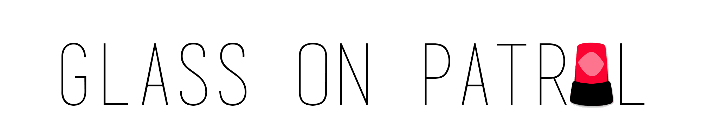
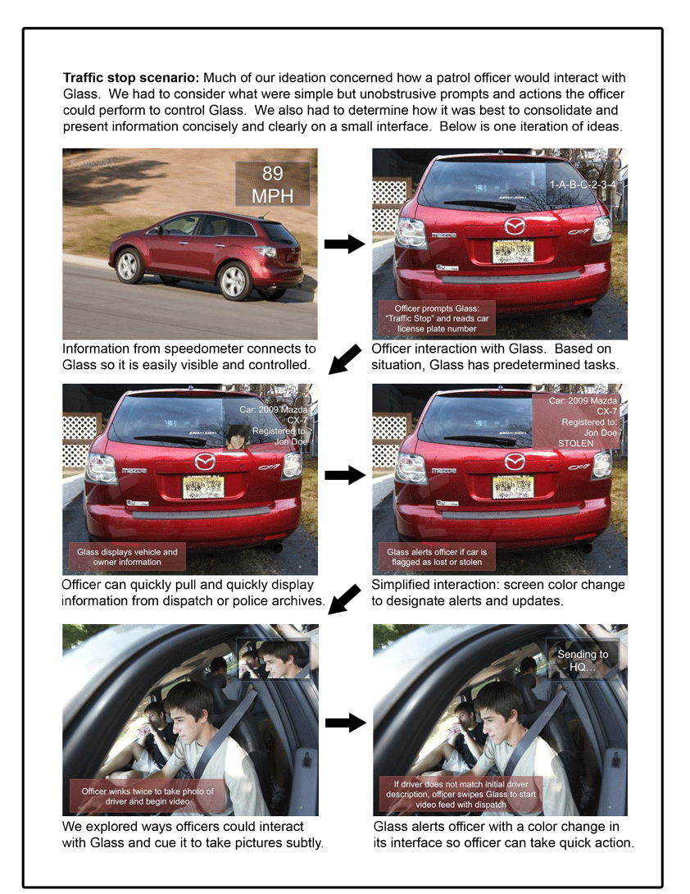
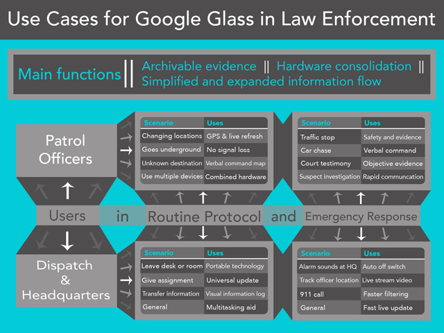
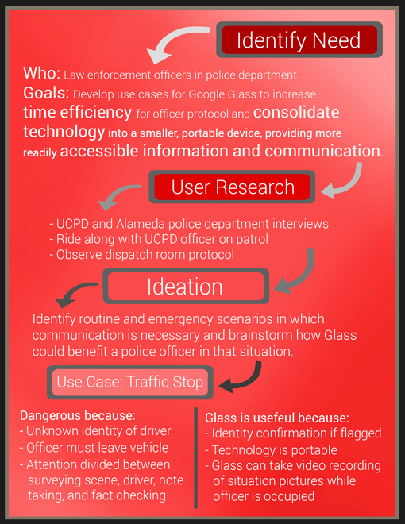

UI/UX Design and Design Research, Berkeley Innovation
Fall 2013
How can Google Glass benefit professionals in industry? Accenture Technology labs tasked our Berkeley Innovation team of seven to research and design the interface for a new enterprise application for Google Glass.
My Role
I interviewed UCPD and Alameda County police captains, went on patrol ride-along to record officer interaction with technology, then brainstormed and designed the front-end interaction for the patrol officer use case.
Key Observations and Concept
By interviewing police officers, we deduced that the traffic stop is one of the most dangerous routine protocols for an officer on patrol. After identifying a need for more safety and efficiency from this information, we brainstormed and design a use case for officers in this situation. A first iteration of an example use case is detailed in the flow graphic below.

Alternative Use Case Ideation

Research and Ideation Design Process
